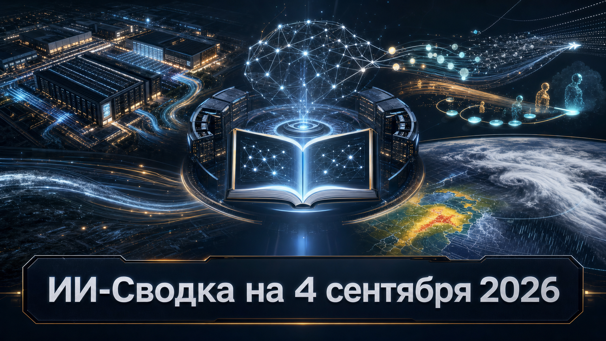

Новостей сегодня меньше, чем обычно
В центре повестки — контроль над инфраструктурой и данными, на которых строится следующий этап развития ИИ. NVIDIA закрепляет сделку вокруг Hugging Face, а облачные и модельные компании ищут капитал и реальные пользовательские следы для масштабирования.
Одновременно Google показывает, что специализированные модели всё активнее выходят из исследовательских лабораторий в массовые продукты — от поиска до карт и ассистентов.
NVIDIA объявила о соглашении по покупке Hugging Face за $12 930 300 000. Это существенное развитие августовских сообщений о возможной продаже платформы: теперь сделка и её сумма подтверждены самой NVIDIA в официальном объявлении.
NVIDIA заявляет, что Hugging Face сохранит поддержку open-source и open-weight моделей, разных облаков и ускорителей. Однако структура интеграции, условия закрытия и необходимые регуляторные согласования пока не раскрыты. Для рынка сделка важна тем, что ключевая площадка распространения моделей и инструментов переходит к крупнейшему поставщику ИИ-ускорителей.
Crusoe привлекла $3 млрд при оценке $30 млрд, сообщает TechCrunch со ссылкой на Bloomberg. По этим данным, раунд совместно возглавляют Atreides Management и Valor Equity Partners, а среди участников названа Mubadala Capital.
Crusoe строит дата-центры и предоставляет GPU-мощности для ИИ-нагрузок; издание называет среди её клиентов Meta*, Microsoft и OpenAI. Официального объявления компании о раунде в доступном пуле нет, поэтому параметры сделки следует считать данными СМИ. Но масштаб финансирования показывает, что капитал продолжает концентрироваться у операторов вычислительной инфраструктуры.
Meta ввела для клиентов Muse Spark contributor-тариф: пользователи получают примерно 95%-ную скидку на токены, если разрешают использовать их запросы и ответы модели для разработки будущих систем. Как сообщает TechCrunch, стандартные цены составляют $1,25 за миллион входных и $4,25 за миллион выходных токенов, а на contributor-тарифе — $0,10 и $0,20 соответственно.
Это отдельное обновление после релиза Muse Spark 1.3: Meta превращает доступ к реальным следам агентного использования в прямой ценовой стимул. Такая схема может удешевить эксперименты разработчиков, но требует особенно внимательно читать условия обработки данных: речь идёт не просто о телеметрии, а о разрешении использовать prompts и outputs для обучения.
Google DeepMind и Google Research выпустили WeatherNext 3 — модель прогнозирования погоды, которую компания намерена внедрить в погодные функции Search, Google Maps и Gemini, а также предоставить через облачные сервисы. По данным TechCrunch, модель строит прогнозы с разрешением до 5 км и поддерживает почасовой шаг.
Google заявляет, что WeatherNext 3 улучшила оценку осадков на 60% относительно WeatherNext 2. Это заявление компании, а не универсальная независимая оценка, и полное техническое описание в пуле не представлено. Важность релиза — в канале распространения: специализированная научная модель сразу становится частью продуктов, которыми пользуются массовая аудитория, исследователи и бизнес.
*Meta и ее сервисы - в России запрещены